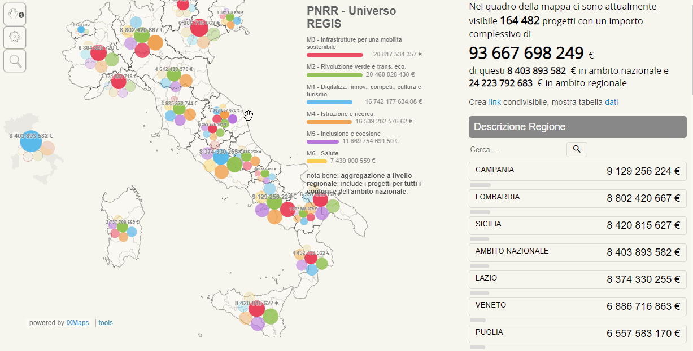
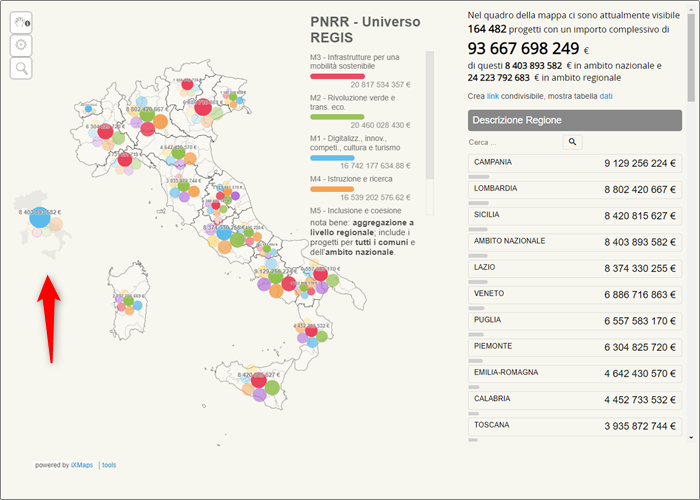
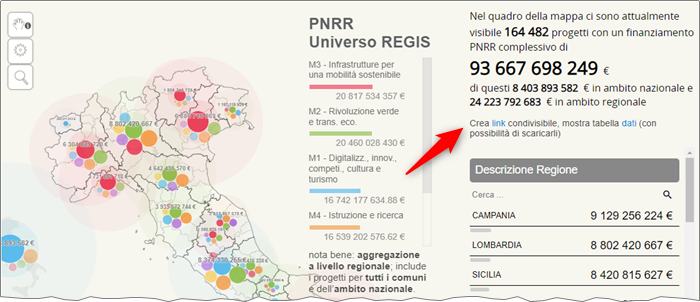

Mappe ReGiS
Per esplorare i dati di dettaglio del PNRR di Italiadomani
Questa mappa rappresenta i progetti pubblicati sul catalogo open data di Italiadomani, ovvero sul sito ufficiale del Piano.
La fonte di questi dati è ReGiS, il sistema di rendicontazione e controllo delle misure e dei progetti finanziati dal Piano Nazionale di Ripresa e Resilienza. In particolare i dati “Universo ReGiS”.
I dati di dettaglio sul Piano Nazionale di Ripresa e Resilienza da fonte ReGiS - pubblicati a metà aprile 2023 - contengono le informazioni di localizzazione dei progetti.
Questi i numeri per i dati “Universo ReGiS”, ad aprile 2023:
I dataset Universo fanno riferimento a tutti i progetti su ReGiS alla data di estrazione, indipendentemente dall’essere stati sottoposti o meno al processo di validazione.
- 164.482 record;
- 128.950 codici CUP;
- 20 regioni;
- 107 province;
- 7.916 Comuni (sono più degli attuali 7.901, perché probabilmente c’è traccia dei nomi Comuni cambiati da inizio PNRR);
- 1.950 record in cui è presente anche l’indirizzo.
A partire da questi dati Guenter Richter (grazie ❣️) ha creato una mappa interattiva per esplorare geograficamente i dati di dettaglio del PNRR pubblicati su Italiadomani.
Ti consigliamo di visualizzarla da personal computer.
Ci sono 4 sezioni principali di interfaccia:
- quella dedicata alla mappa, in cui spostarla facendo click e trascinandola, oppure fare zoom avanti e indietro con la rotellina del mouse;
- quella con il riepilogo dei conteggi sulle 6 Missioni del PNRR;
- quella con i conteggi del numero di progetti visibili in mappa e il loro valore complessivo in euro;
- quella che contiene, scorrendola, numerosi elenchi di valori univoci contenuti nei dati originali (Regione, Provincia, Missione, Submisura, ecc.) con i conteggi correlati, che possono essere usati anche come filtro. E in fondo a questa sezione c’è il pulsante per condividere la mappa che è stata creata (vedi qui).
Quest’ultima è molto comoda: facendo click su un valore univoco (esempio: Roma), questo diventa un filtro della colonna Descrizione Comune e la barra con il nome della colonna diventa rossa (tutti filtri attivi sono in rosso, con una ‘x’ per rimuoverli).
In Figura 2 è possibile vedere un’animazione del funzionamento di base della mappa: come al cambio di visualizzazione geografica cambino i conteggi (sono sempre aggiornati a ciò che si vede in mappa), come al click su uno dei filtri disponibili sulla destra venga estratto un sotto insieme dei dati, e come rimuovere un filtro applicato.

Tra i dati ce ne è diversi non associati a un Comune in particolare, perché sono di ambito nazionale. Per dare conto in mappa anche di questi, è stata creata una piccola Italia, che si può vedere in Figura 3.

Condividere la visualizzazione della mappa che hai creato
Se vuoi condividere una mappa, con una serie di filtri applicati, centrata su una parte di tuo interesse, puoi farlo in questo modo:
- fai click su
linkin “Crea link condivisibile”; - copia il link che appare e incollalo dove vuoi (chat, e-mail, ecc.).

Questo ad esempio il link a una mappa con i soli progetti della Missione 2 “Rivoluzione verde e transizione ecologica”, localizzati in Calabria.
Incorporare la mappa in una pagina web
Si può usare una sintassi come quella sottostante, e inserire come src anche un URL personalizzto come quello di sopra.
<iframe id="map" width="1024px" height="840" frameborder="0" scrolling="no" marginheight="0" marginwidth="0" src="https://gjrichter.github.io/pages/PNRR/index_embed_Open_Data_PNRR_Dati_Universo_REGIS.html?filter=WHERE%20%22Descrizione%20Regione%22%20=%20%22CALABRIA%22%20AND%20%22missione%22%20=%20%22M2%22&view=[39.07677595221322,16.707458496093754],8"></iframe>Costruire filtri di visualizzazione “a mano”
L’URL di base della mappa è questo:
https://gjrichter.github.io/pages/PNRR/index_embed_Open_Data_PNRR_Dati_Universo_REGIS.htmlPer applicare un filtro bisogna aggiungere una o più condizioni, o nella forma WHERE "campo" = "valore" o WHERE "campo" like "valore", preceduti da ?filter=.
I campi utilizzabili per definire filtri sono:
Codice Univoco submisura
Descrizione Submisura
CUP
Codice Locale Progetto
Descrizione Regione
Descrizione Provincia
Descrizione Comune
Indirizzo
CAP
Data di Estrazione
missione
Descrizione Misura
CUP Descrizione Categoria
CUP Descrizione Settore
PROCOM
importo
Sintesi progetto
Soggetto attuatore
Denominazione AggiudicatarioQuindi se si vogliono filtrare tutti i progetti in cui la Descrizione Misura è uguale a Creazione di imprese femminili, all’URL di base bisognerà aggiungere:
WHERE "Descrizione Misura" = "Creazione di imprese femminili"
Ovvero
Negli URL al posto dello spazio bisogna usare %20, mentre per le " bisogna usare %22.
È possibile combinare più filtri, separandoli con AND:
WHERE "Soggetto attuatore" = "DIPARTIMENTO PER LE POLITICHE GIOVANILI" AND "Descrizione Regione" = "SICILIA"Ovvero:
E all’URL si possono aggiungere i parametri per scegliere la scala di zoom e la posizione iniziale del centro della mappa, nella forma view=[latitudine,longitudine],zoom.
L’operatore like nelle condizione di filtro consente di fare ricerche di una porzione di testo. Quindi se si vogliono ad esempio filtrare tutti i progetti in cui il “Soggetto attuatore” è una “Città Metropolitana”, si può scrivere: WHERE "Soggetto attuatore" like "metropolitana", ovvero:
Dati utilizzati per la mappa
Per realizzare questa mappa sono stati utilizzati questi dati:
- Universo ReGiS - Gare Aggiudicatari PNRR;
- Universo ReGiS - Localizzazione del PNRR;
- Universo ReGiS - Progetti.
In particolare quelli con data di osservazione “1 marzo, 2023”.
La presentazione della mappa dei dati ReGiS
Qui una presentazione curata dall’Associazione onData:
🫶 Grazie mille a Guenter Richter per avere creato questo strumento.
Se vuoi fare delle proposte su questo vademecum, se vuoi raccontarci come l’hai usato, se hai bisogno di aiuto in merito, ecco come fare.